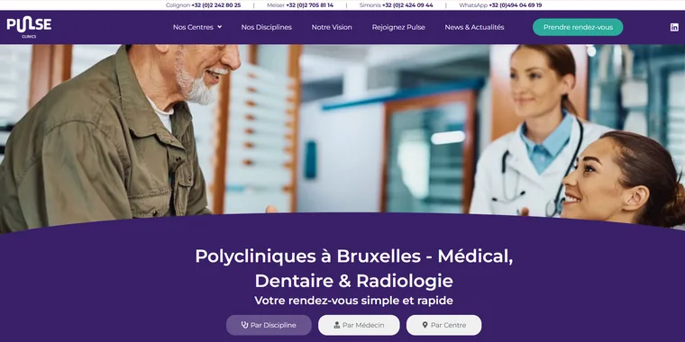
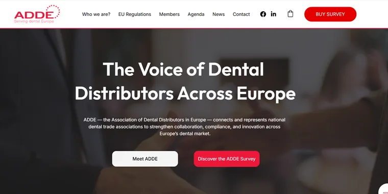
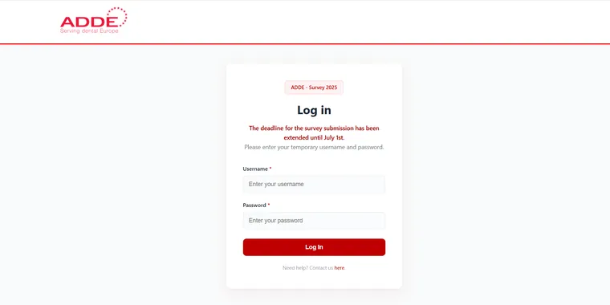
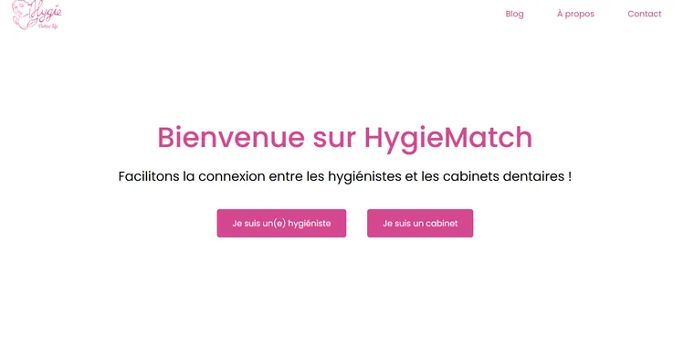

XoraFloss
Bientôt disponibleNouveau projet autour de la santé dentaire, actuellement en développement. Plus d’informations bientôt !
Projet en cours · Bientôt disponible
Après une première expérience dans le domaine de la santé dentaire, j’ai choisi de me réorienter vers l’informatique. Je combine mes compétences en communication, résolution de problèmes et travail d’équipe avec ma passion pour le développement web.
Des projets web réalisés au fil de mon parcours, de la santé dentaire aux applications et jeux interactifs.
Nouveau projet autour de la santé dentaire, actuellement en développement. Plus d’informations bientôt !
Projet en cours · Bientôt disponible

Site de Pulse Clinics, 3 centres médicaux à Bruxelles, réalisé de A à Z pour un client réel. Liens directs vers la prise de rendez-vous Rosa, formulaire de recrutement en PHP et blog alimenté automatiquement par des snippets personnalisés.

Site de l’ADDE (Association of Dental Distributors in Europe), réalisé de A à Z pour un client réel. En ligne, il présente l’association et propose son enquête annuelle, l’ADDE Survey 2025-2026.

Formulaire sur mesure en PHP pour l’enquête ADDE, hébergé sur Hostinger. Interface aérée et simple, sans éléments superflus. Les réponses arrivent dans Google Sheets, pour que l’équipe les exploite facilement.

Plateforme de mise en relation entre cabinets dentaires et hygiénistes, créée pendant mon stage. Le cabinet publie une annonce, l’hygiéniste voit les cabinets qui lui correspondent et est mis en relation. Authentification, sécurité et déploiement sur VPS.
Application de suivi des soins dentaires avec rappels, développée avec Symfony pendant ma formation.
Quiz sur la culture informatique, créé en équipe de 4 lors d’un hackathon d’une journée. J’ai pris en charge la partie back en JavaScript.
Application Node.js et MongoDB qui affiche les 1 000 films les mieux notés d’IMDb, récupérés via une API, et permet d’en ajouter. Réalisée pendant ma formation.
Jeu Snake en JavaScript, réalisé pendant ma formation pour comprendre le fonctionnement du code, et pour le plaisir.
Calculatrice en JavaScript avec les quatre opérations de base, réalisée pendant ma formation pour m’exercer à manipuler le DOM.
Les technologies et outils que j’ai utilisés dans mes projets web et applications.
Après avoir évolué dans le domaine de la santé dentaire, j’ai entrepris une transition vers l’informatique. Ma formation initiale m’a dotée de solides compétences en résolution de problèmes, en communication et en travail d’équipe.
Aujourd’hui, je suis déterminée à exploiter ces compétences pour exceller dans la technologie. Mon objectif est de fusionner mes connaissances antérieures avec mes nouvelles compétences en informatique pour créer des solutions innovantes dans un domaine en constante évolution.
N’hésitez pas à me contacter pour en savoir plus sur mon parcours, mes compétences ou mes projets.